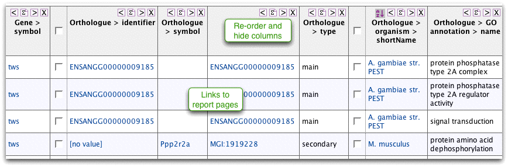

close

|
|
| previous | next |
| Run a template | Query Builder |
The results page lets you look through results, follow links to report pages and export data. This table shows the starting gene, orthologous genes with the organism name and details of each GO term applied to the orthologous genes. Orthologue data in FlyMine comes from InParanoid. Note that 'main' and 'secondary' denote the best hit in the other organism and paralogues of that gene respectively.

The summary buttons ![[icon]](summary_maths.png) at the top of each column allow you to view some summary statistics for the column. For names and identifiers it will tell you about unique values, numerical data gives shows the min, max, mean and standard deviation.
at the top of each column allow you to view some summary statistics for the column. For names and identifiers it will tell you about unique values, numerical data gives shows the min, max, mean and standard deviation.
Click the summary button for the column 'Orthologue > GO annotation > name'
The table shows the most commonly occurring GO terms applied to orthologues of the original gene.
![[Summary table]](summary_table.png)
From a results table you can export results in a number of formats.
![[Export]](export.png)